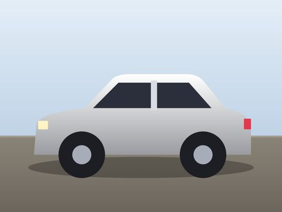
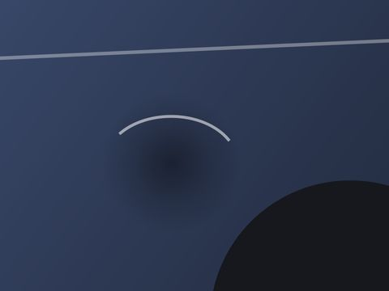

Fotos de peritaje ligeras, listas para la aseguradora.
Arrastra la carpeta del siniestro y en segundos el reportaje ocupa hasta un 80 % menos, sin pérdida apreciable de detalle. Con tamaño máximo por foto para las plataformas con límite de subida, sin GPS y con las HEIC pasadas a JPG. Gratuito y sin límite de fotos.
Windows 10 y 11 · gratuito y sin anuncios · procesado local
Siniestros de hoy · 612 fotos · 1,6 GB
Ninguna pasa de 1 MB · sin GPS · HEIC a JPG · los originales no se tocan

Siniestro 4418131 fotos · 344 MB → 82 MBHechoDe la carpeta del móvil a la plataforma, en tres pasos
Todo el procesado se hace en tu ordenador: no se sube ninguna foto.
- 01
Arrastra fotos o carpetas
JPG, PNG o HEIC del iPhone, con todas sus subcarpetas. También desde el botón derecho del Explorador: sobre una carpeta, o con «Enviar a» para varias a la vez.
- 02
Ajusta la calidad
Con una barra de calidad y una comparación de una de tus fotos a escala 1:1, para comprobar que el detalle se conserva.
- 03
Envía o súbelas
Las fotos comprimidas se guardan en una carpeta nueva junto a la original, con la misma estructura. Los originales no se modifican.

Compruebas el resultado antes de comprimir
Un recorte de una de tus fotos, original y comprimido, a escala 1:1. Al mover la barra de calidad ves al instante el peso estimado del lote.
- Tres ajustes predefinidos (alta, media y baja) o la calidad exacta que necesites.
- Estimación previa del peso por foto y del lote completo.
- Configuración persistente: recuerda la calidad y las opciones de la última sesión.

Original · 3,1 MB
Calidad 60 · 733 KB (77 % menos)
Lo necesario para enviar el reportaje de un siniestro
Para peritos de automóvil, daños, hogar e industriales, y para talleres y tramitadores de siniestros.
Hasta un 80 % menos
Lotes de cientos de fotos en segundos, conservando la fecha y hora de captura, los metadatos y el perfil de color.
Tamaño máximo por foto
Fija un límite, por ejemplo 1 MB, y cada foto se ajusta por separado: primero la calidad y, solo si no basta, la resolución.
Sin geolocalización
Elimina las coordenadas GPS de los metadatos para proteger la privacidad del asegurado. La fecha y la hora se conservan.
HEIC a JPG
Convierte las fotos HEIC del iPhone a JPG, el formato que admiten todas las plataformas, o las mantiene en HEIC comprimidas.
Subcarpetas a cualquier nivel
Recorre toda la estructura (siniestros, fechas, vehículos, daños) y la reproduce en la carpeta de salida.
Originales intactos
Los originales no se modifican. Una foto que no se puede leer se copia tal cual, para que no falte ninguna en el lote.
Las fotos, en el formato que exige cada plataforma
Tres opciones independientes que se mantienen activas para la siguiente sesión.
- Límite de peso: reduce la calidad solo en las fotos que lo superan y, si no basta, la resolución, sin bajar de 640 píxeles.
- Sin geolocalización: las fotos no revelan dónde vive el asegurado ni dónde está el vehículo.
- Formato JPG: las fotos del iPhone, en un formato que acepta cualquier plataforma.
Comprimir es gratis. Clasificar por matrícula, cuando lo necesites.
Sin anuncios, sin tarjeta y sin límite de fotos; solo se pide un correo al abrirlo por primera vez. Si además quieres que el reportaje de cada vehículo acabe en su carpeta, eso lo hace PeritoLab Matrículas, que también comprime.
PeritoLab Compresor
Para enviar el reportaje de un siniestro
sin tarjeta y sin anuncios
- Fotos y carpetas sin límite
- Tamaño máximo por foto
- Sin GPS y HEIC a JPG
- Comparación a escala 1:1
PeritoLab Matrículas
Para clasificar el reportaje de cada vehículo
desde · 30 días gratis, sin tarjeta
- Reconocimiento de matrículas
- Una carpeta por vehículo
- Reportaje fotográfico en PDF
- Compresión de fotos incluida
Lo que nos suelen preguntar
¿Es gratuito de verdad?
Sí, sin límite de fotos, sin tarjeta y sin anuncios. Es nuestra forma de que conozcas PeritoLab.
¿Por qué pide un correo?
Para saber quién lo usa y poder avisarte de algo importante del Compresor, como un fallo grave o un cambio en sus condiciones. Las novedades y ofertas solo llegan si marcas la casilla, que es aparte y opcional, y puedes darte de baja con un clic.
¿Se pierde calidad?
La compresión JPEG elimina información, pero con la calidad recomendada la diferencia no es apreciable a tamaño real. Antes de empezar comparas un recorte original y comprimido a escala 1:1 y eliges la calidad con una barra. Los originales no se modifican.
¿Funciona con las fotos del iPhone?
Sí. Las fotos HEIC del iPhone se convierten a JPG (o se mantienen en HEIC comprimidas, si lo prefieres) conservando el perfil de color y la fecha de captura.
¿Necesito conexión a internet?
Para comprimir, no. Solo se conecta para registrar tu correo, comprobar si hay versiones nuevas y enviar estadísticas de uso (cuántas fotos comprimes, nunca las fotos), que puedes desactivar en «Acerca de».
¿Qué datos recogéis?
Ninguna de tus fotos. Solo tu correo, la versión que usas y cuántas fotos llevas comprimidas. El detalle está en la política de privacidad.
¿Sirve para peritos de otros ramos?
Sí. Funciona con cualquier foto: peritaciones de automóvil, daños, hogar o industriales, y también para talleres y tramitadores que envían fotos a las compañías.
¿En qué ordenadores funciona?
En Windows 10 y 11 de 64 bits. Se instala en segundos y te avisa de cada versión nueva para actualizarlo con un clic.
¿Y si además quiero clasificar las fotos por matrícula?
Eso lo hace PeritoLab Matrículas: lee la matrícula de cada foto y crea una carpeta por vehículo. Incluye compresión de fotos y se prueba 30 días gratis.
El reportaje del siniestro, listo para enviar
Gratuito, sin anuncios y con tus fotos siempre en tu ordenador.
¿Dudas? Escríbenos a contacto.peritolab@gmail.com